Alur kerja sistem
Gambaran besar perjalanan tamu, dari reservasi sampai tercatat di laporan keuangan.
Satu tamu melewati beberapa bagian hotel. Semua langkah tercatat di satu sistem, jadi data front office, housekeeping, restoran, dan akunting selalu sama.
Front office mencatat tamu, kamar, harga, dan deposit.
Kamar dipilih, folio tagihan dibuat otomatis, kamar jadi Terisi.
Tagihan kamar, restoran (POS), laundry, dan extra bed masuk ke folio.
Pembayaran diterima, invoice dibuat, kamar jadi Kotor.
Kamar dibersihkan lalu kembali Tersedia.
Jurnal pendapatan, pajak, kas/bank, dan piutang terbentuk otomatis.
Modul yang dipakai
| Modul | Untuk apa | Bab |
|---|---|---|
| Hotel Management | Reservasi, tape chart, folio, housekeeping, maintenance, night audit, laporan hotel | 4, 7–22, 27–31 |
| Point of Sale | Kasir restoran; tagihan bisa dibebankan ke folio kamar tamu | 23–24 |
| Print Direct | Cetak struk POS, tiket dapur, dan laporan langsung ke printer lewat HP/tablet Android | 25–26 |
| Accounting | Chart of accounts, pajak PBJT & service, jurnal, invoice, laporan keuangan | 5, 27–31 |
| CRM | Forecast pendapatan dari reservasi (otomatis) | 32 |
| Purchase & Inventory | Pembelian bahan dan stok | 34 |
Peran & hak akses
Siapa bisa melakukan apa di sistem.
Semua pengguna login di alamat yang sama. Menu yang tampil mengikuti hak akses masing-masing.
User / Front Desk
Reservasi, check-in/out, folio, room service, Laporan Tamu Harian. Baca master data.
Housekeeper
Semua hak Front Desk + mengelola jadwal housekeeping.
Supervisor / Duty Manager
Semua hak Housekeeper + menyetujui diskon, maintenance, mengubah kamar, night audit manual.
Accountant / Billing
Folio, invoice, pembayaran, City Ledger, komisi agen, laporan pendapatan.
General Manager
Akses penuh termasuk konfigurasi, paket harga, dan pengaturan hotel.
Memberi hak akses
- Buka Settings › Users & Companies › Users.
- Pilih pengguna, buka tab Access Rights.
- Di bagian Hotel Management, centang peran yang sesuai. Untuk kasir restoran isi juga Point of Sale; untuk akunting isi Invoicing.
- Klik Save. Pengguna perlu refresh browser agar menu baru muncul.
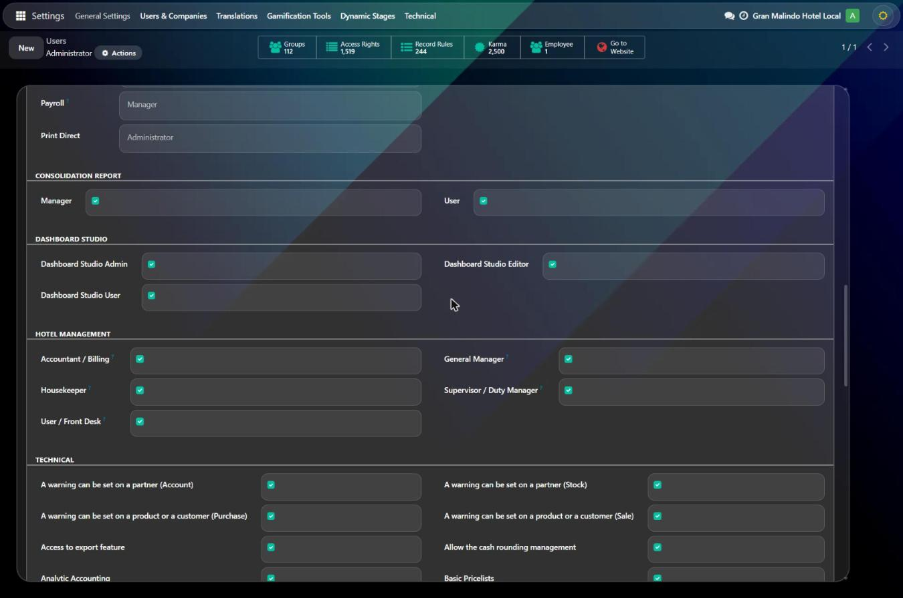
Masuk & navigasi
- Buka alamat Xerpium hotel di Chrome/Edge, misalnya
https://gran-malindo-hotel.xerpium.com. - Isi Email/Login dan Password, lalu klik Log in.
- Klik ikon menu (kotak-kotak) di kiri atas untuk membuka daftar aplikasi: Hotel Management, Point of Sale, Accounting, Print Direct, dan lainnya.
- Gunakan menu atas di tiap aplikasi. Di Hotel Management: Dashboard, Front Desk, Operasional, Master Data, Channel Manager, Laporan, Konfigurasi.
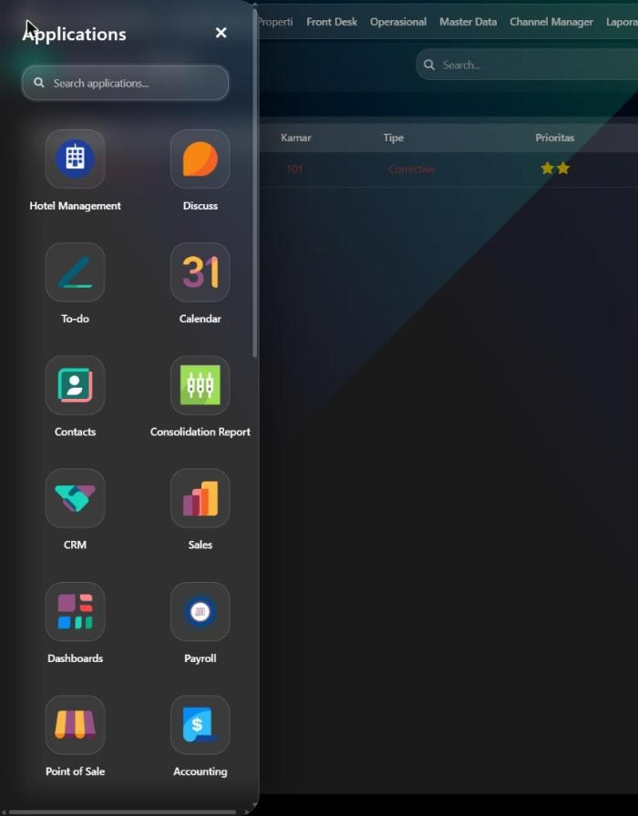
Pengaturan hotel
Parameter dasar hotel yang dipakai semua transaksi.
Buka Hotel Management › Konfigurasi › Pengaturan Hotel. Isi sekali di awal, lalu klik Save.
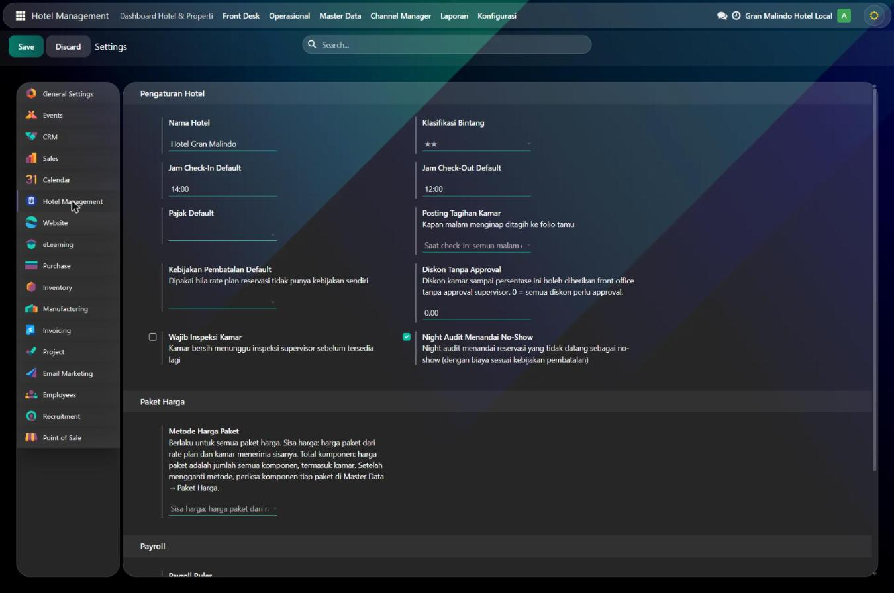
| Pengaturan | Keterangan | Contoh |
|---|---|---|
| Nama Hotel / Klasifikasi Bintang | Tampil di kepala laporan PDF | Hotel Gran Malindo, ★★ |
| Jam Check-In / Check-Out Default | Jam standar hotel | 14:00 / 12:00 |
| Pajak Default | Dipakai untuk tagihan yang produknya tidak punya pajak | Service 10% + PBJT 10% |
| Posting Tagihan Kamar | Saat check-in: semua malam langsung masuk folio. Night audit: ditagih per malam | Saat check-in |
| Kebijakan Pembatalan Default | Dipakai bila rate plan tidak punya kebijakan sendiri | Flexible H-1 |
| Diskon Tanpa Approval (%) | Batas diskon front office tanpa persetujuan supervisor. 0 = semua diskon perlu approval | 0 |
| Wajib Inspeksi Kamar | Kamar bersih menunggu inspeksi supervisor sebelum Tersedia | Tidak |
| Night Audit Menandai No-Show | Tamu yang tidak datang otomatis jadi No-Show dengan biaya sesuai kebijakan | Ya |
| Metode Harga Paket | Sisa harga: kamar menerima sisa harga paket. Total komponen: harga paket = jumlah komponen | Sisa harga |
Chart of Accounts, pajak & jurnal
Akun, pajak, dan buku kas yang dipakai jurnal otomatis hotel.
Database memakai chart of accounts Indonesia – Hotel & Property (139 akun). Akun inilah yang dipakai otomatis oleh folio, POS, dan pembayaran.
1. Chart of Accounts
Buka Accounting › Configuration › Chart of Accounts. Akun bisa ditambah atau diganti namanya, tetapi jangan hapus akun yang sudah dipakai transaksi.
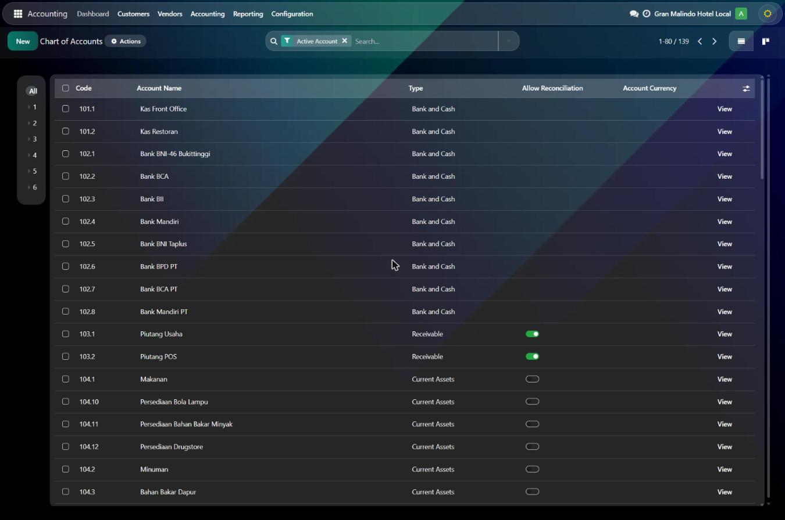
| Kode | Akun | Dipakai untuk |
|---|---|---|
101.1 | Kas Front Office | Jurnal kas front desk (deposit & pembayaran tamu tunai) |
101.2 | Kas Restoran | Pembayaran tunai di POS |
102.1 | Bank BNI-46 Bukittinggi | Transfer, EDC |
103.1 | Piutang Usaha | Invoice tamu & perusahaan (City Ledger) |
103.2 | Piutang POS | Tagihan POS yang dibebankan ke folio kamar |
300.1 | Hutang Dagang | Tagihan supplier & komisi agen |
300.2 | Hutang Pajak PB I Bukittinggi | PBJT 10% (pajak hotel & restoran) |
300.4 | Hutang Service Charge | Service charge 10% |
500.1 | Pendapatan Kamar | Tagihan kamar |
500.2 / 500.3 | Pendapatan Makanan / Minuman | F&B restoran & room service |
500.4 | Pendapatan Laundry | Laundry |
500.5 | Pendapatan Lain-lain Operasional | Extra bed, biaya pembatalan, lain-lain |
610.1 / 610.2 | HPP Makanan / Minuman | Harga pokok F&B |
2. Pajak PBJT & Service Charge
Buka Accounting › Configuration › Taxes. Hotel dan restoran dikenai PBJT (pajak daerah) dan service charge, bukan PPN.
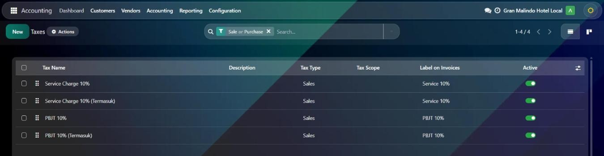
| Pajak | Cara hitung | Akun |
|---|---|---|
| Service Charge 10% | 10% ditambahkan di atas harga | 300.4 Hutang Service Charge |
| PBJT 10% | 10% ditambahkan di atas harga | 300.2 Hutang Pajak PB I |
| Service Charge 10% (Termasuk) | Harga jual sudah termasuk service | 300.4 |
| PBJT 10% (Termasuk) | Harga jual sudah termasuk PBJT | 300.2 |
3. Jurnal (buku kas/bank)
Buka Accounting › Configuration › Journals. Setiap tempat uang masuk punya jurnal sendiri, supaya laporan kas per kasir terpisah.
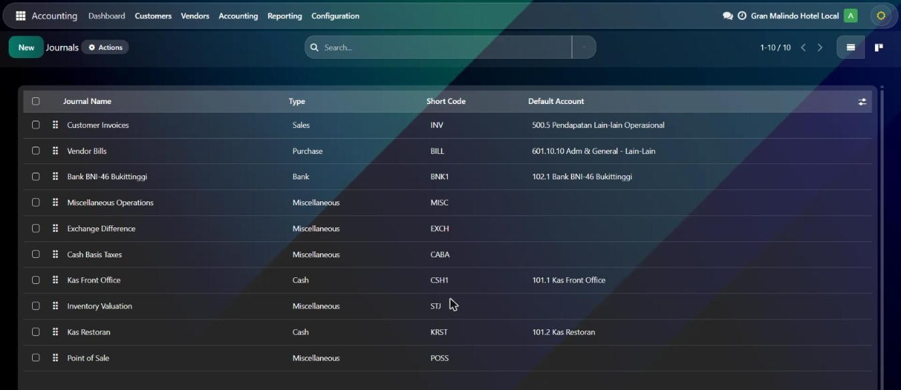
| Jurnal | Tipe | Dipakai di |
|---|---|---|
| Kas Front Office (CSH1) | Cash | Deposit & pembayaran tamu di front desk |
| Kas Restoran (KRST) | Cash | Metode bayar Tunai di POS |
| Bank BNI-46 Bukittinggi (BNK1) | Bank | Transfer / EDC di front desk dan POS |
| Customer Invoices (INV) | Sales | Invoice folio tamu & city ledger |
| Vendor Bills (BILL) | Purchase | Tagihan supplier & komisi agen |
| Point of Sale (POSS) | Misc | Jurnal penutupan sesi POS |
Produk & kategori produk
Produk kamar, menu, dan layanan, beserta akun pendapatannya.
Semua yang dijual hotel adalah produk: kamar, paket, menu restoran, extra bed, laundry. Akun pendapatan sebuah produk diambil dari kategori produk-nya.
1. Kategori produk & akun
Buka Accounting › Configuration › Product Categories.
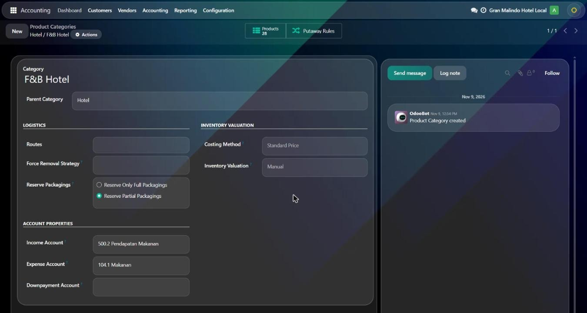
| Kategori | Income Account | Isi |
|---|---|---|
| Hotel / Kamar Hotel | 500.1 Pendapatan Kamar | Kamar Hotel, paket Kamar + Sarapan, komponen kamar |
| Hotel / F&B Hotel | 500.2 Pendapatan Makanan | Menu restoran (Nasi Goreng, Coffee, Juice, …), komponen sarapan |
| Hotel / Layanan Hotel | 500.5 Pendapatan Lain-lain | Extra Bed, Biaya Pembatalan / No-Show, Komisi Travel Agent |
2. Membuat produk
- Buka Point of Sale › Products › Products (atau Accounting › Customers › Products), klik New.
- Isi nama, Sales Price, dan Reference (kode, misalnya
FD-008). - Product Type: Goods untuk menu/barang, Service untuk jasa (kamar, laundry, extra bed).
- Sales Taxes: Service Charge 10% + PBJT 10% (menu F&B) atau versi Termasuk (kamar/paket).
- Category: pilih kategori hotel yang benar (Kamar / F&B / Layanan).
- Centang Point of Sale bila produk dijual di kasir restoran; centang Extra Bed khusus produk extra bed.
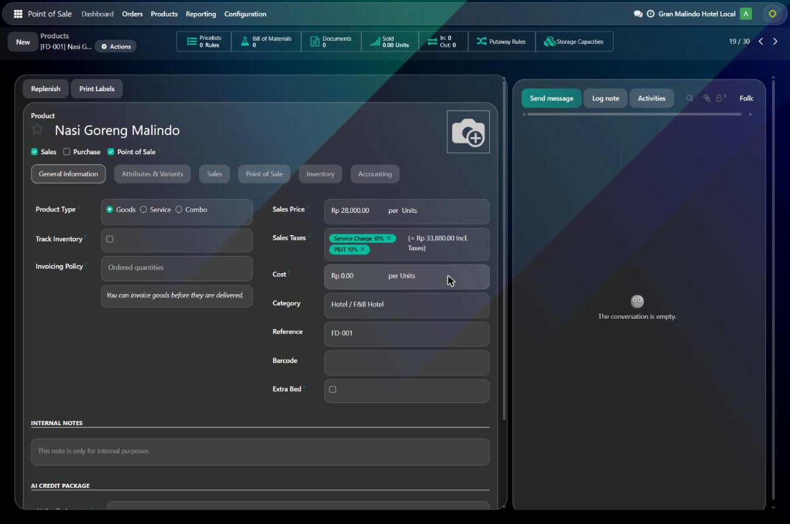
3. Kategori POS & tampilan di kasir
Di tab Point of Sale produk, pilih Category POS (Food, Snack, Beverage, Juice, Soft Drink, Coffee) dan warna tombol. Kategori POS hanya untuk pengelompokan di layar kasir; akun tetap dari kategori produk.
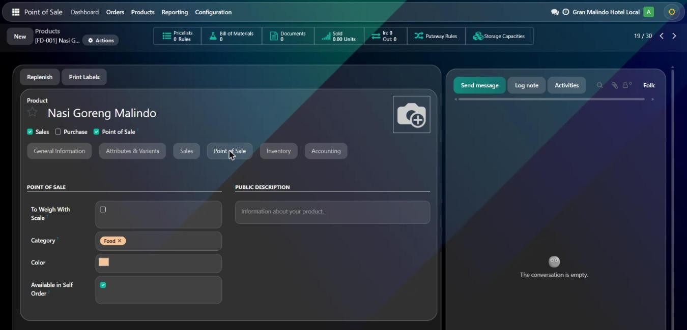
Kamar, tipe kamar & lantai
Data kamar fisik hotel.
1. Tipe kamar
Buka Hotel Management › Master Data › Tipe Kamar. Isi Kode, Tipe Tempat Tidur, Kapasitas Tamu, Harga Dasar/Malam, serta amenity dan fasilitas.
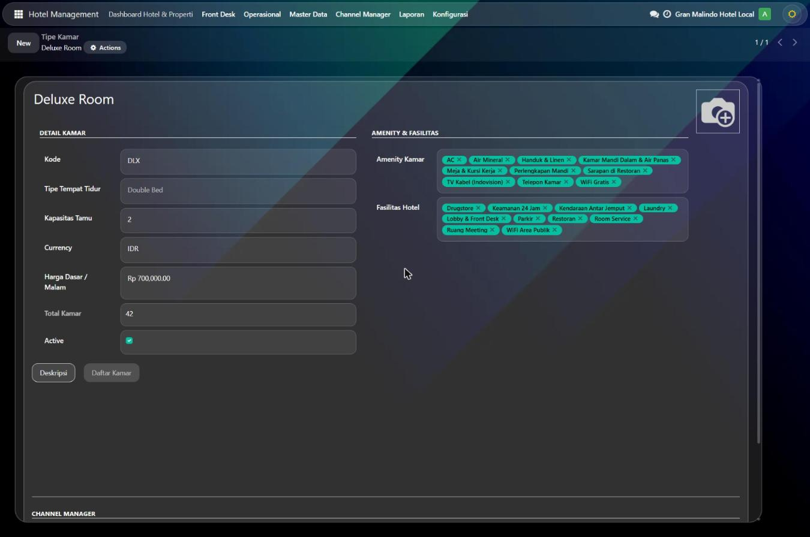
2. Kamar
Buka Hotel Management › Master Data › Kamar, klik New, isi No. Kamar, Tipe Kamar, dan Lantai. Tampilan kanban mengelompokkan kamar per status.
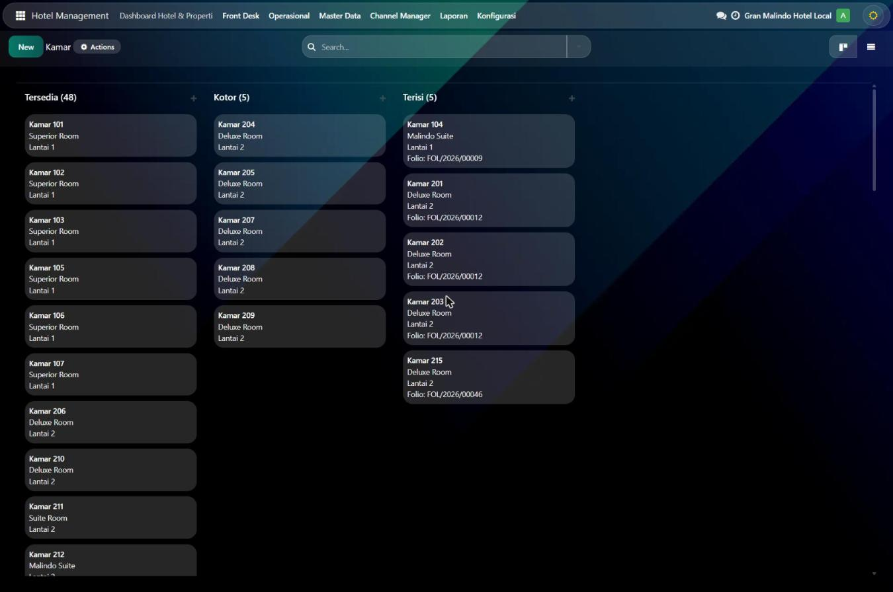
| Status kamar | Artinya | Berubah otomatis saat |
|---|---|---|
| Tersedia | Siap dijual / di-check-in | Housekeeping selesai (atau sudah diinspeksi) |
| Terisi | Ada tamu menginap | Check-in |
| Kotor | Perlu dibersihkan | Check-out / pindah kamar |
| Bersih (Menunggu Inspeksi) | Sudah dibersihkan, tunggu supervisor | Tugas housekeeping selesai, bila Wajib Inspeksi aktif |
| Maintenance / Diblokir | Tidak bisa dijual | Work order maintenance dikonfirmasi |
3. Lantai, amenity & fasilitas
Master Data › Lantai & Gedung, Master Data › Amenity Kamar (AC, TV, WiFi, …) dan Master Data › Fasilitas Hotel (Restoran, Laundry, Parkir, …) cukup diisi nama dan urutan.
Rate plan & paket harga
Harga per malam, harga musiman, restriksi, dan paket kamar + sarapan.
1. Rate plan
Buka Hotel Management › Master Data › Rate Plan. Rate plan menentukan harga per malam satu tipe kamar.
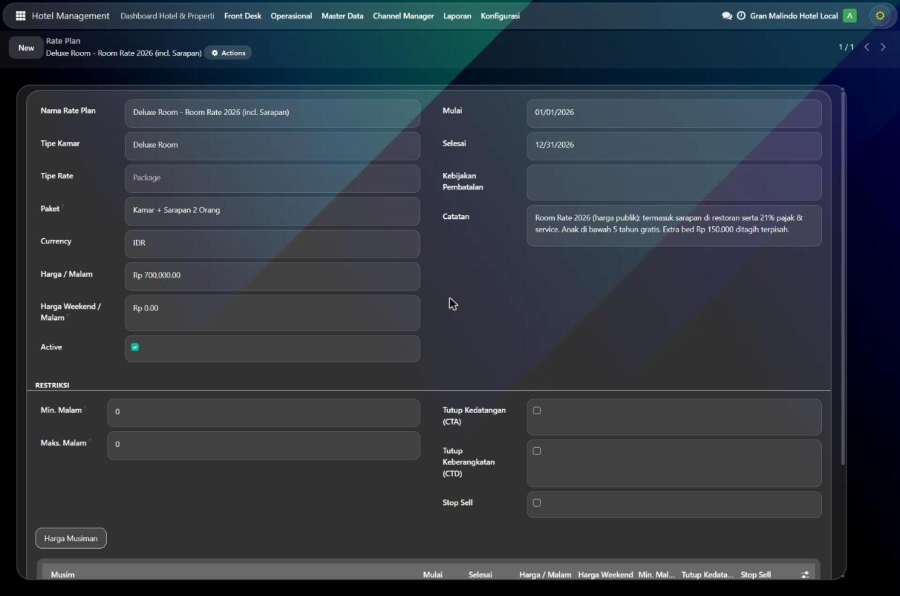
| Field | Keterangan |
|---|---|
| Tipe Kamar | Rate ini untuk tipe kamar mana |
| Tipe Rate | Rack / Corporate / OTA / Package / Promo |
| Paket | Wajib bila Tipe Rate = Package |
| Harga / Malam, Harga Weekend | Harga biasa dan harga malam Jumat–Sabtu (0 = sama) |
| Mulai / Selesai | Periode berlaku (kosong = selamanya) |
| Restriksi | Min./Maks. Malam, Tutup Kedatangan (CTA), Tutup Keberangkatan (CTD), Stop Sell |
| Harga Musiman | Baris musim (High Season, Lebaran, Tahun Baru) dengan harga sendiri |
| Kebijakan Pembatalan | Biaya batal & no-show untuk reservasi dengan rate ini |
2. Paket harga
Pakai paket bila harga kamar sudah termasuk sarapan atau layanan lain. Buka Master Data › Paket Harga (khusus General Manager).
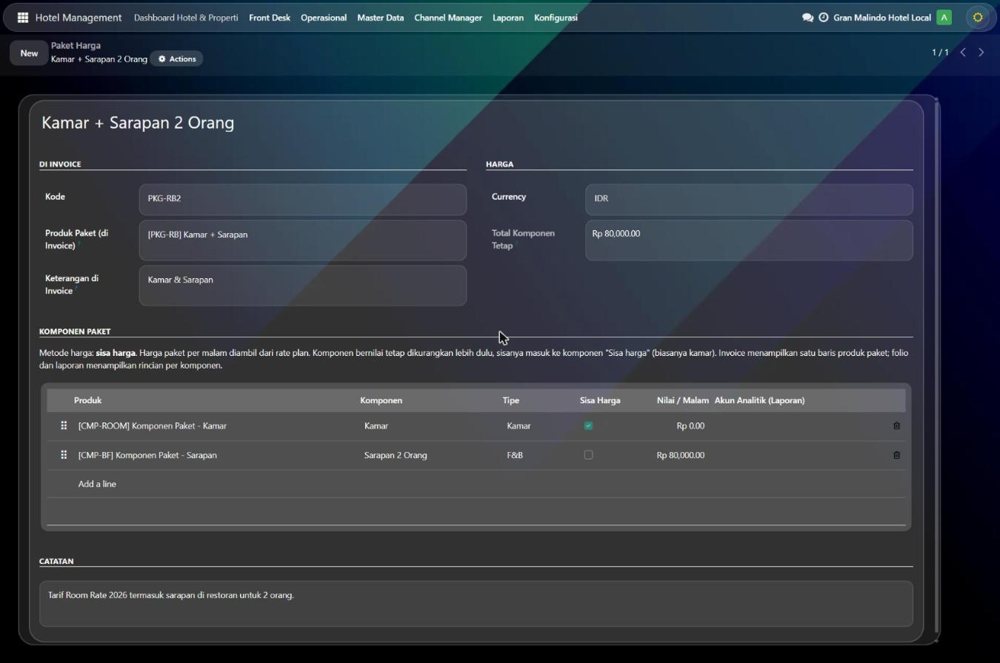
- Isi Nama, Kode, dan Produk Paket (produk yang tampil di invoice, mis. [PKG-RB] Kamar + Sarapan).
- Tambah komponen: produk, nama komponen, tipe (Kamar/F&B/…), dan nilai per malam.
- Centang Sisa Harga pada komponen kamar (metode sisa harga).
- Buat rate plan bertipe Package yang memakai paket ini.
| Dokumen | Yang tampil |
|---|---|
| Invoice tamu | Satu baris produk paket (mis. Kamar + Sarapan × 3 malam) |
| Folio | Satu baris per komponen: Kamar Rp 620.000 dan Sarapan Rp 80.000 per malam |
| Laporan Pendapatan per Item | Rincian per komponen (Kamar, F&B) |
Tamu & travel agent
Data tamu, tamu WNA, dan pengaturan komisi travel agent.
1. Data tamu
Buka Master Data › Tamu. Tamu bisa juga dibuat langsung dari form reservasi. Untuk tamu WNA, lengkapi kewarganegaraan, jenis kelamin, tanggal lahir, dan nomor paspor (dipakai laporan APOA).
2. Travel agent & komisi
- Buka data perusahaan agen, tab Travel Agent Hotel.
- Centang Travel Agent Hotel.
- Pilih Tipe Komisi: Persentase (isi Komisi Kamar %) atau Fixed Amount (isi nominal per reservasi).
- Pilih Cara Bayar Komisi: Tagihan Vendor (hotel membayar agen) atau Potong Piutang (mengurangi piutang City Ledger agen).
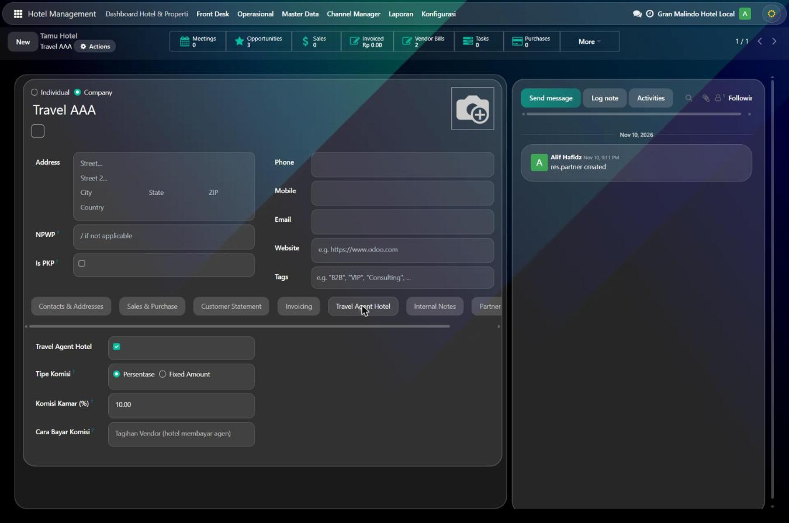
Kebijakan pembatalan
Buka Master Data › Kebijakan Pembatalan, klik New.
| Field | Keterangan |
|---|---|
| Batal Gratis Sampai | Pembatalan paling lambat H-sekian tidak dikenai biaya |
| Biaya Batal Terlambat | Tanpa Biaya / Malam Pertama / % dari Total Kamar / Nominal Tetap |
| Biaya No-Show | Jenis biaya untuk tamu yang tidak datang |
| Ketentuan | Teks kebijakan untuk tamu |
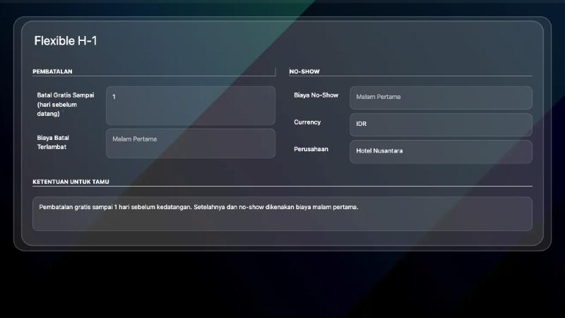
Pasang kebijakan di rate plan, atau sebagai Kebijakan Pembatalan Default di Pengaturan Hotel.
Dashboard hotel
Ringkasan kondisi hotel hari ini.
Buka Hotel Management › Dashboard Hotel & Properti. Dashboard diperbarui otomatis dan bisa difilter per periode.
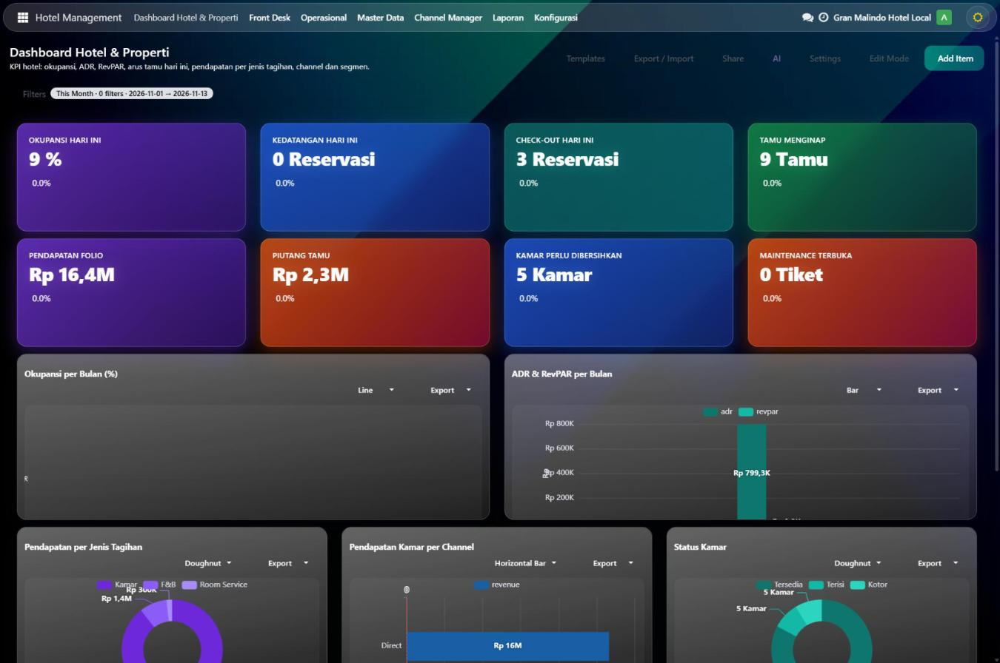
| KPI | Definisi |
|---|---|
| Okupansi Hari Ini | Kamar terisi ÷ kamar yang bisa dijual |
| ADR | Pendapatan kamar ÷ malam terjual |
| RevPAR | Pendapatan kamar ÷ kamar tersedia |
| Piutang Tamu | Sisa invoice tamu yang belum lunas |
| Kamar Perlu Dibersihkan | Kamar berstatus Kotor |
Reservasi
Membuat booking tamu, memilih kamar, dan mengatur harga.
Buka Hotel Management › Front Desk › Reservasi, klik New.
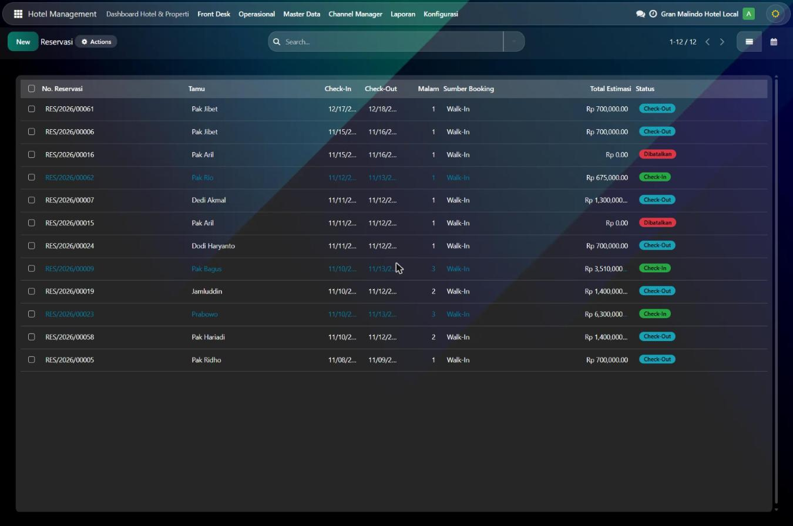
Membuat reservasi
- Pilih Tamu. Kewarganegaraan (WNI/WNA) dan Kota terisi dari data tamu dan bisa diubah.
- Isi Tamu Dewasa & Anak, lalu tanggal Check-In dan Check-Out. Jumlah malam terhitung otomatis.
- Sumber Booking & Channel: Walk-In/Telepon/OTA dan Direct/Booking.com/Traveloka. Dipakai di dashboard dan CRM.
- Rate Plan dipilih setelah baris kamar ditambahkan; harga terisi otomatis.
- Travel Agent (opsional): tipe & nilai komisi terisi dari data agen.
- Ditagih ke / City Ledger (opsional): perusahaan yang menanggung tagihan.
- Tab Daftar Kamar: tambah baris per kamar: Tipe Kamar, No. Kamar (boleh nanti saat check-in), Harga/Malam.
- Klik Konfirmasi. Sistem mengecek kamar tidak bentrok, sisa kamar per tipe, dan restriksi rate plan.
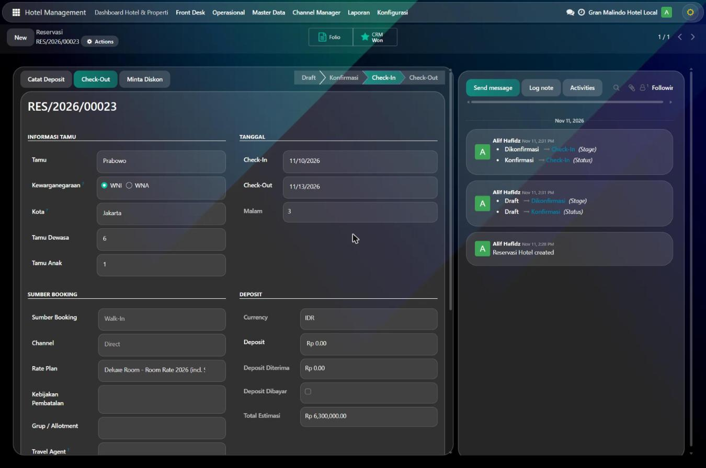
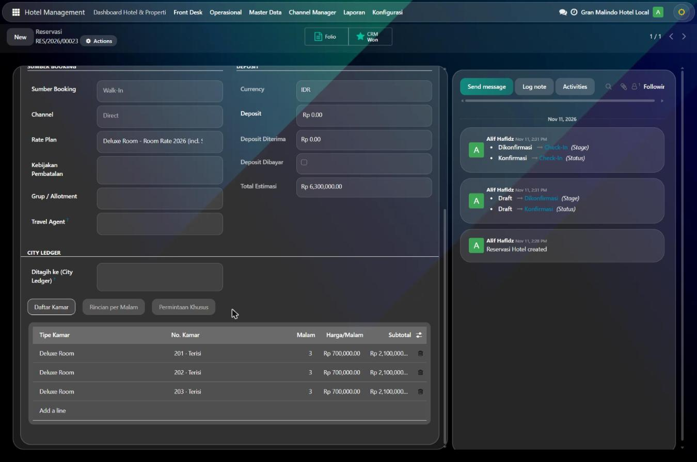
Memilih nomor kamar
Pilihan No. Kamar menampilkan status kamar. Kamar Tersedia ada di atas. Kamar Kotor tetap boleh dipilih untuk tanggal mendatang; bila tamu tiba hari ini muncul peringatan dan tugas housekeeping-nya diprioritaskan.
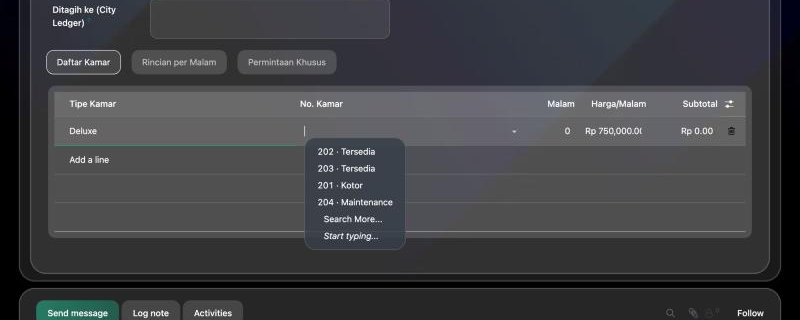
Harga per malam
Tab Rincian per Malam berisi harga setiap malam (mengikuti harga weekend dan musim). Harga satu malam bisa diubah selama belum diposting ke folio.
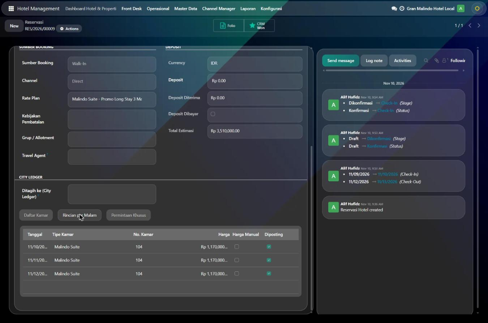
Status reservasi
Tape chart
Melihat ketersediaan dan memindah reservasi dengan drag.
Buka Front Desk › Tape Chart. Baris = kamar, kolom = tanggal. Angka di baris tipe kamar = sisa kamar per malam.
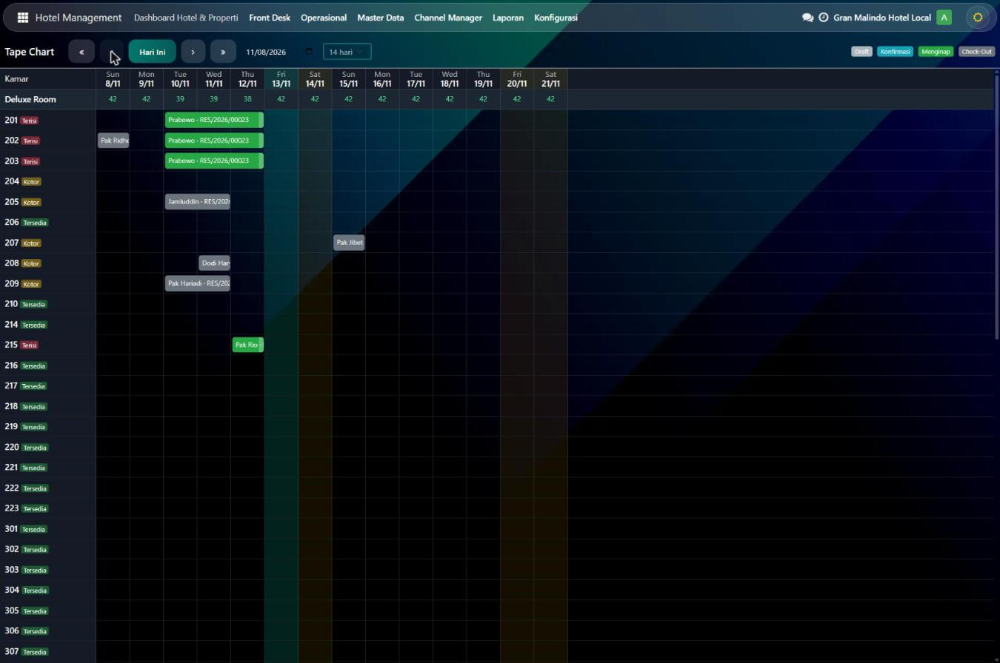
| Aksi | Cara | Hasil |
|---|---|---|
| Buka reservasi | Klik blok | Form reservasi terbuka |
| Reservasi baru | Klik sel kosong | Form baru dengan kamar & tanggal terisi |
| Pindah kamar / tanggal | Geser (drag) blok | Lama menginap tetap. Tamu yang sudah check-in hanya bisa pindah kamar; kamar lama jadi Kotor |
| Extend / persingkat | Tarik ujung kanan blok | Tanggal check-out berubah |
Grup & allotment
Untuk rombongan, MICE, dan travel agent. Buka Front Desk › Grup & Allotment.
- Buat grup: nama, pemesan/agen, tanggal, rate plan, dan Batas Rilis (cut-off).
- Isi blok kamar per tipe: jumlah kamar dan harga grup.
- Ditagih ke (opsional) untuk master bill ke perusahaan/agen.
- Konfirmasi Blok — kamar ditahan, tidak dijual ke tamu lain.
- Buat Rooming List — satu reservasi per kamar; ganti nama tamu saat daftar nama diterima.
- Rilis — setelah cut-off kamar yang tidak terisi dilepas otomatis, atau manual dengan Rilis Sisa Blok.
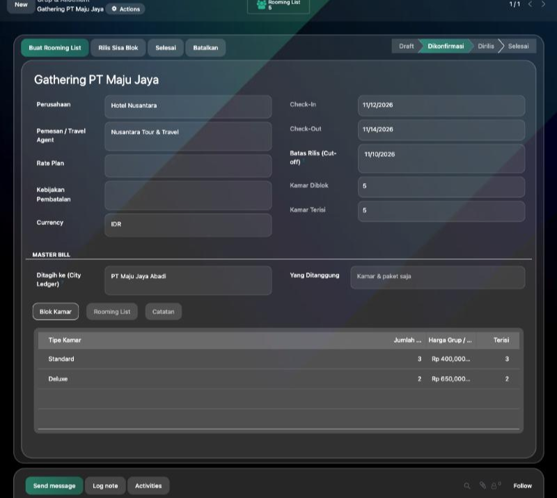
Minta diskon (persentase / fixed amount)
Diskon kamar dengan persetujuan supervisor.
Front office boleh menawarkan harga di bawah harga standar, tetapi harga baru berlaku setelah disetujui Supervisor / Duty Manager.
- Di reservasi, klik Minta Diskon. Semua kamar reservasi terisi dengan harga standar.
- Pilih Tipe Diskon: Persentase (isi Diskon %) atau Fixed Amount (isi Diskon Rp).
- Fixed Amount = total potongan untuk seluruh reservasi. Sistem membagi otomatis ke semua kamar dan malam sesuai harga standarnya.
- Cek Total Diskon dan Total Setelah Diskon, isi alasan, lalu klik Ajukan.
- Supervisor mendapat notifikasi, membuka permintaan, lalu klik Setujui atau Tolak.
- Setelah disetujui, harga kamar di reservasi otomatis berubah.
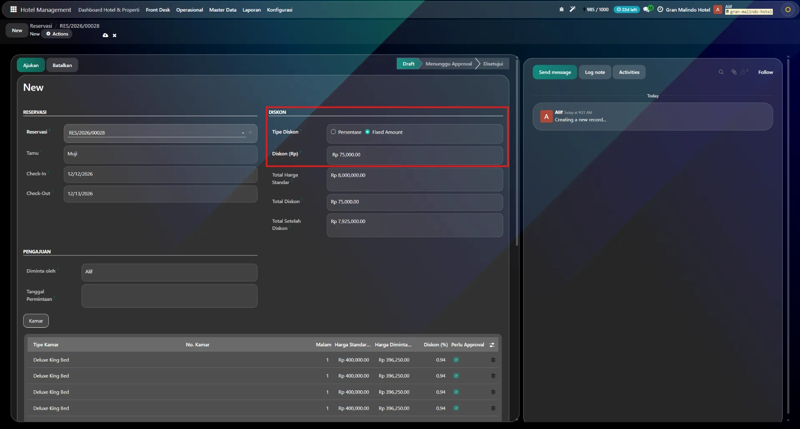
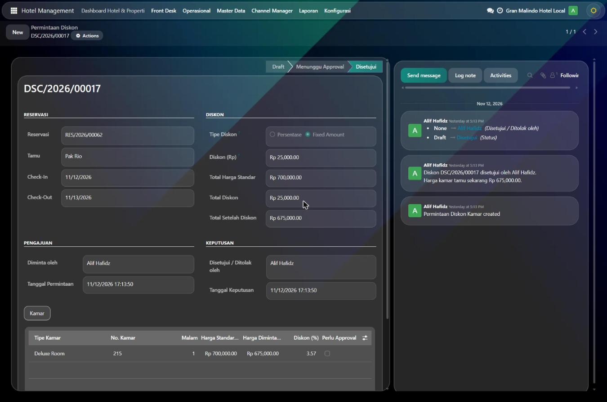
Check-in & folio
Menerima tamu dan mengelola tagihannya selama menginap.
Check-in
- Buka reservasi dari Front Desk › Tiba Hari Ini. Status harus Dikonfirmasi.
- Klik Check-In. Wizard menampilkan kamar; hanya kamar Tersedia yang bisa dipakai.
- Klik Check-In Sekarang. Folio dibuat, deposit pindah ke folio, tagihan kamar diposting, kamar jadi Terisi.
- Cetak Registration Card dari Print › Registration Card untuk ditandatangani tamu.
Folio tamu
Folio adalah tagihan tamu selama menginap. Buka dari tombol Folio di reservasi atau Front Desk › Folio Tamu.
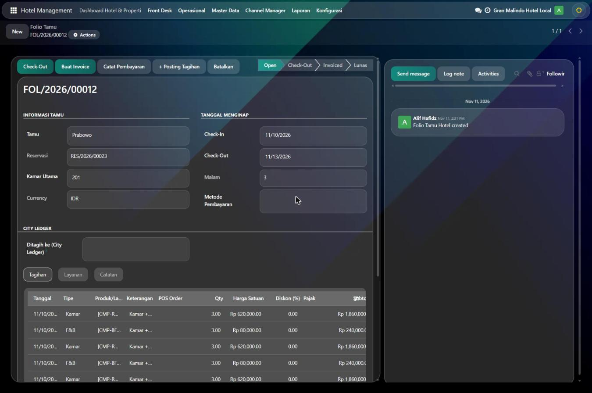
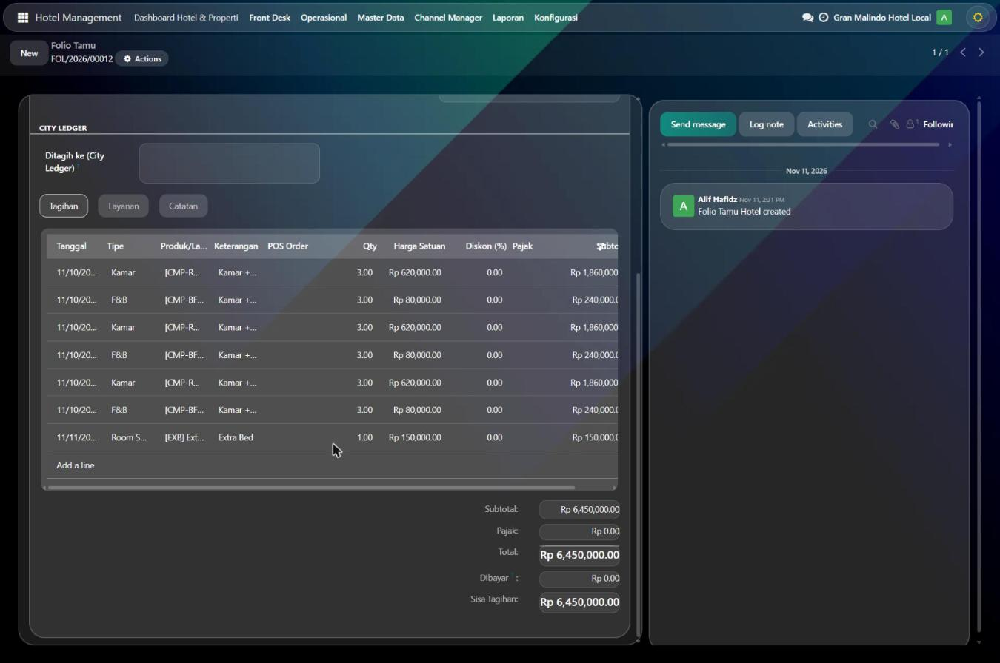
| Tombol | Fungsi |
|---|---|
| + Posting Tagihan | Menambah tagihan manual (minibar, laundry, extra bed, telepon) |
| Catat Pembayaran | Menerima pembayaran sebagian/penuh kapan saja |
| Buat Invoice | Membuat invoice dari folio |
| Check-Out | Proses check-out (lihat bab berikutnya) |
Check-out & invoice
Pembayaran akhir, invoice, dan kwitansi.
- Buka folio dari Front Desk › Check-Out Hari Ini. Pastikan semua tagihan sudah masuk.
- Cetak tagihan lewat Print › Folio / Bill untuk ditunjukkan ke tamu.
- Klik Check-Out. Isi tanggal check-out sebenarnya (pulang lebih awal mengurangi malam).
- Isi pembayaran: nominal, metode, dan jurnal (Kas Front Office / Bank). Centang Buat & Posting Invoice Sekarang.
- Klik Proses Check-Out. Folio jadi Check-Out, kamar jadi Kotor dan masuk antrian housekeeping.
- Cetak kwitansi dari folio: Print › Kwitansi Pembayaran.
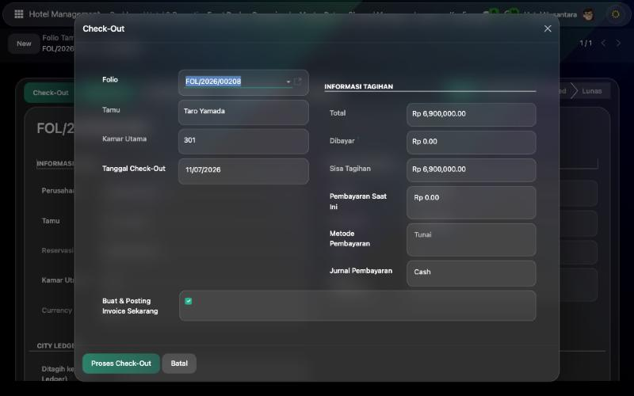
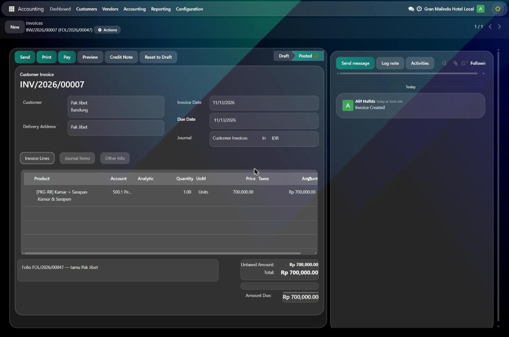
Pembatalan & no-show
- Klik Batalkan atau No Show di reservasi. Wizard menampilkan kebijakan, deposit, dan biaya sesuai kebijakan.
- Sesuaikan biaya bila perlu (boleh dinolkan) dan isi alasan.
- Konfirmasi. Biaya dicatat di folio dan diinvoice; deposit dipakai untuk melunasinya.
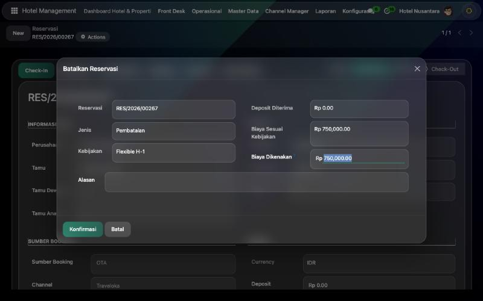
Housekeeping
Jadwal kebersihan kamar.
Buka Operasional › Housekeeping. Jadwal harian dibuat otomatis setiap pagi: kamar Kotor mendapat pembersihan check-out (prioritas), kamar Terisi mendapat pembersihan harian.
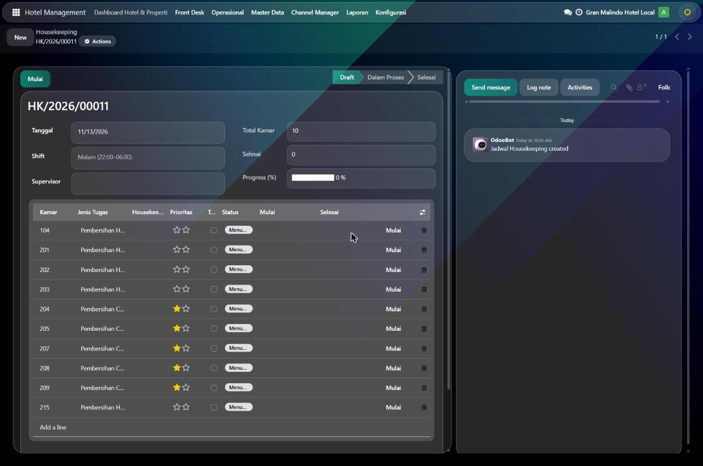
- Isi Supervisor dan Housekeeper per baris kamar.
- Klik Mulai untuk memulai shift.
- Per kamar: Mulai → Selesai (→ Inspeksi bila wajib inspeksi).
- Kamar kembali Tersedia begitu tugasnya selesai/diinspeksi.
Maintenance
Buka Operasional › Maintenance, klik New.
- Isi kamar/lokasi, tipe (Corrective/Preventive), prioritas, dan deskripsi kerusakan.
- Konfirmasi oleh supervisor — kamar jadi Maintenance dan tidak bisa di-check-in.
- Isi Ditugaskan Ke dan jadwal, teknisi klik Mulai Pengerjaan.
- Isi penyelesaian, klik Selesai — kamar kembali Tersedia.
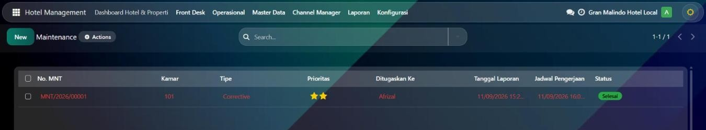
Room service & F&B (dari hotel)
Untuk pesanan yang dicatat front office (bukan lewat kasir POS). Buka Operasional › Room Service & F&B, klik New.
- Pilih Folio tamu — kamar dan nama tamu terisi.
- Pilih Tipe Layanan (F&B, Laundry, Spa, Transport, …) dan tambah item.
- Konfirmasi, kabari dapur/laundry, lalu Terkirim setelah diantar.
- Post ke Folio — tagihan masuk folio dan ikut invoice saat check-out.
Night audit
Night audit berjalan otomatis setiap malam (sekitar 01:30) untuk tanggal bisnis kemarin. Supervisor bisa menjalankannya manual di Operasional › Night Audit.
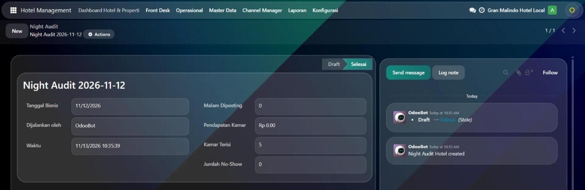
- Posting malam yang belum ditagih (mode night audit).
- Tandai no-show reservasi terkonfirmasi yang tidak datang, dengan biaya sesuai kebijakan.
- Simpan rekap malam diposting, pendapatan kamar, kamar terisi, daftar no-show.
Setup Point of Sale
Konfigurasi kasir restoran dan metode pembayaran.
Kasir restoran memakai aplikasi Point of Sale. Database sudah punya satu POS: Restoran Gran Malindo.
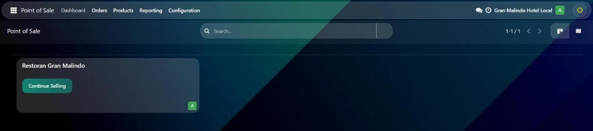
1. Metode pembayaran
Buka Point of Sale › Configuration › Settings, bagian Payment.
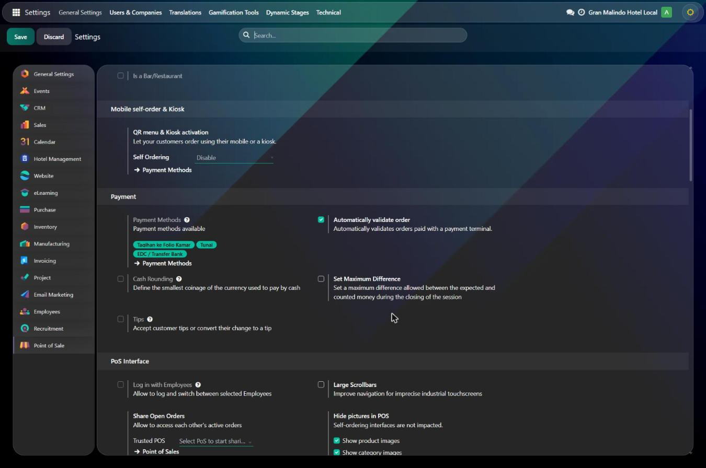
| Metode | Jurnal | Akun |
|---|---|---|
| Tunai | Kas Restoran | 101.2 Kas Restoran |
| EDC / Transfer Bank | Bank BNI-46 Bukittinggi | 102.1 Bank BNI |
| Tagihan ke Folio Kamar | (kosong = piutang) | 103.2 Piutang POS, ditagih ke tamu saat check-out |
2. Metode "Tagihan ke Folio Kamar"
Buka Point of Sale › Configuration › Payment Methods › Tagihan ke Folio Kamar.
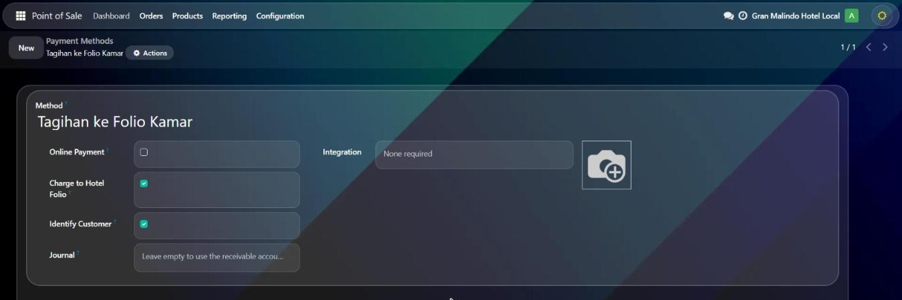
3. Pengaturan lain
| Pengaturan | Keterangan |
|---|---|
| Is a Bar/Restaurant | Aktifkan bila memakai denah meja & kirim order ke dapur |
| Preparation Printers | Printer dapur/bar (bisa Print Direct, bab 26) |
| Print Direct Receipt Printer | Printer struk kasir lewat Android (bab 26) |
| Automatic Receipt Printing | Struk tercetak otomatis setelah bayar |
Transaksi POS & tagihan ke kamar
Kasir restoran dan pembebanan ke kamar tamu.
- Buka Point of Sale › Dashboard, klik Open Register / Continue Selling. Isi kas awal bila diminta.
- Pilih menu — tekan tombol produk; jumlah bisa diubah dengan numpad.
- Klik Payment.
- Tamu bayar langsung: pilih Tunai atau EDC / Transfer Bank, lalu Validate.
- Tamu hotel ingin ditagih ke kamar: klik Customer, cari nama tamu, lalu pilih Tagihan ke Folio Kamar dan Validate.
- Tutup sesi di akhir shift dari menu ☰ › Close Register; hitung kas dan konfirmasi.
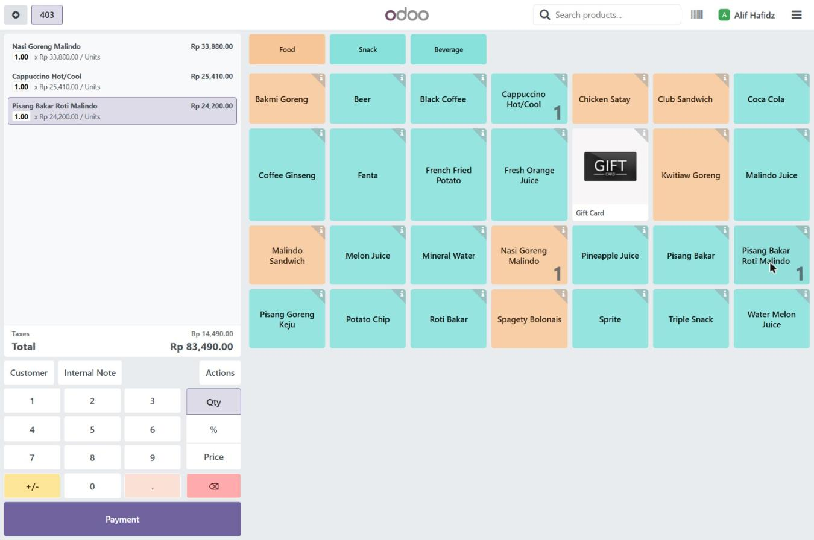
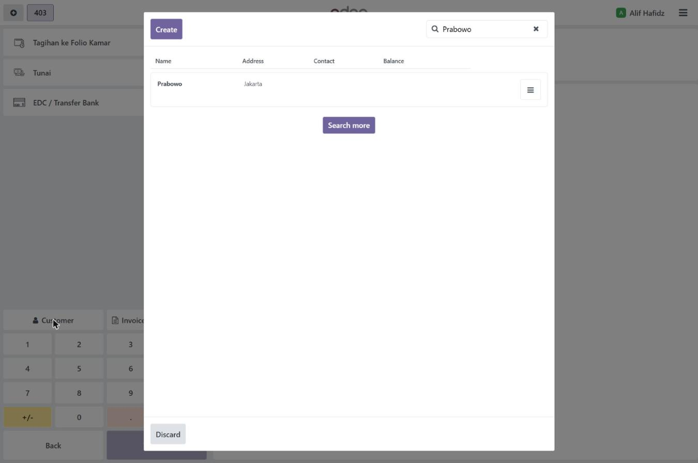
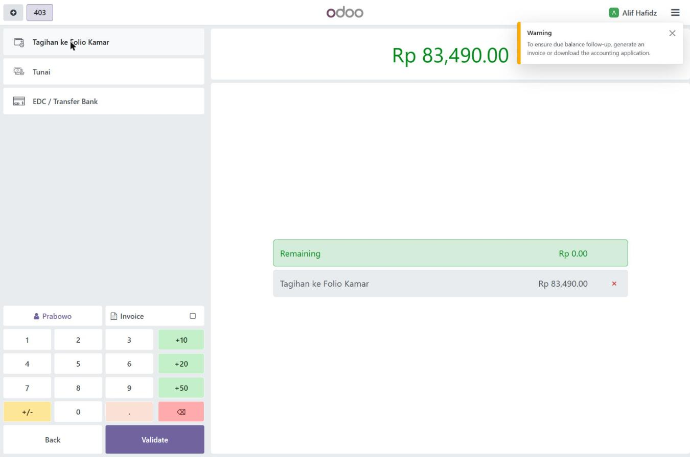
Print Direct: host & printer
Mencetak langsung ke printer lewat HP/tablet Android.
Print Direct mencetak struk POS, tiket dapur, dan laporan Odoo langsung ke printer thermal/label lewat HP atau tablet Android. Tidak perlu PC, IoT Box, atau dialog cetak.
Kasir bayar / user klik Print
Tugas cetak masuk antrian
Mengambil tugas tiap 3 detik
Bluetooth, LAN (port 9100), atau USB OTG
1. Hak akses & instalasi
Modul Xerpium Print Direct dan Print Direct POS sudah terpasang. Admin perlu grup Print Direct: Administrator (Settings › Users). Pengguna biasa tidak perlu grup apa pun untuk mencetak.
2. Host device & pairing
- Buka Print Direct › Configuration › Host Devices, klik New. Beri nama sesuai lokasi: Tablet Kasir, HP Dapur.
- Klik Pair Device. Odoo menampilkan QR dan kode pairing.
- Di aplikasi Android Xerpium Print Direct, tap Scan pairing QR (atau Enter code).
- Klik Done. Status host menjadi Online.
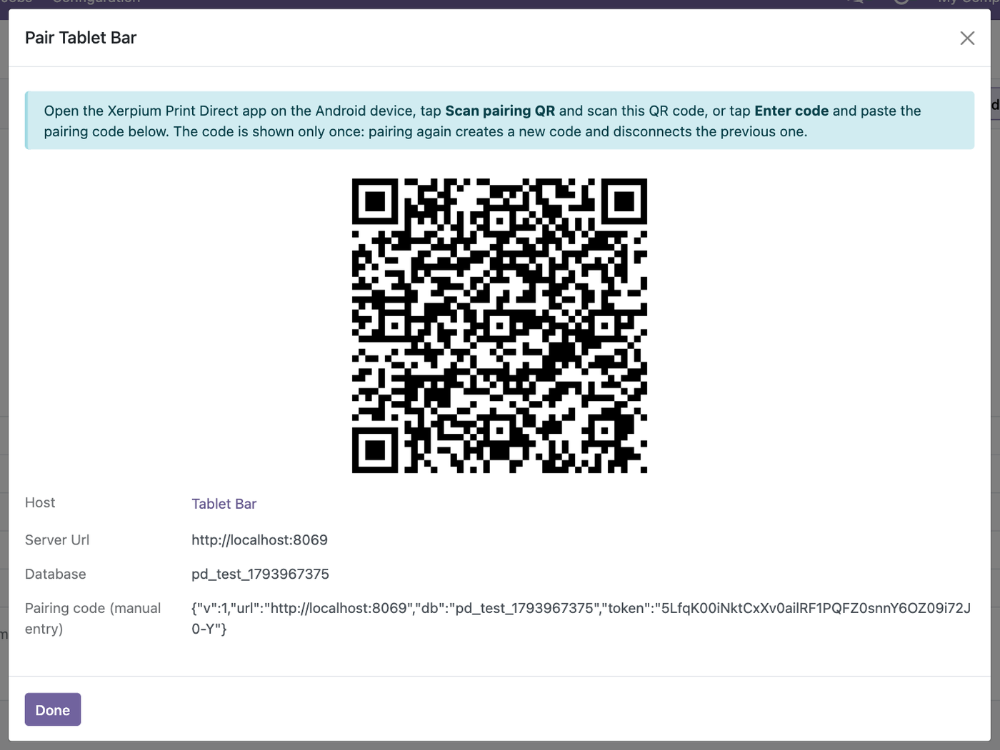
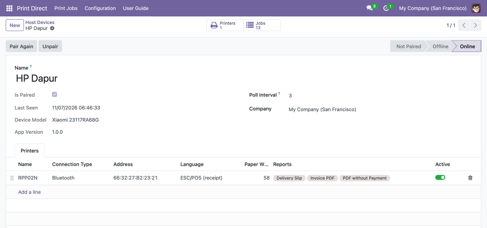
3. Setting di Android
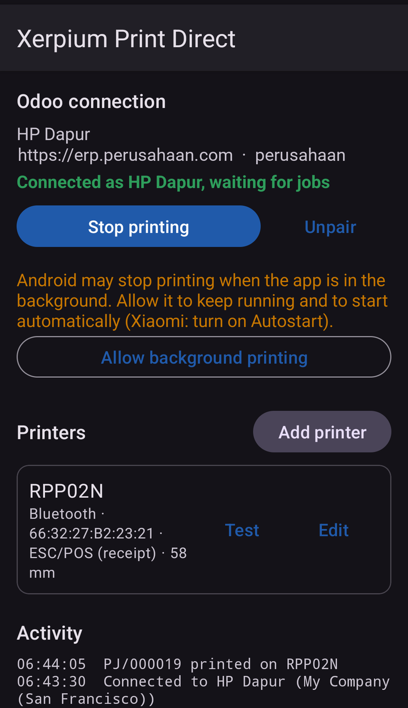
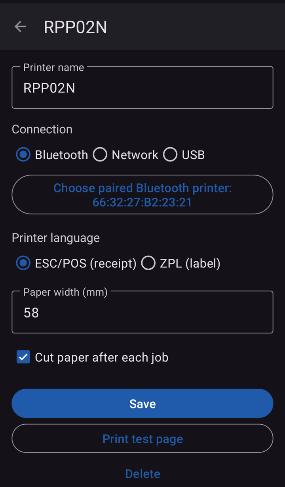
| Langkah | Keterangan |
|---|---|
| Izin aplikasi | Kamera (scan QR), Nearby devices (Bluetooth), Notifikasi → Izinkan semua |
| Pair printer Bluetooth | Di Settings Android › Bluetooth, PIN biasanya 0000 / 1234 |
| Add printer | Nama, koneksi (Bluetooth/Network IP:9100/USB), bahasa ESC/POS atau ZPL, lebar kertas 58/80 mm |
| Izinkan latar belakang | Battery optimization → Don't optimize. Xiaomi: Autostart ON + No restrictions. Samsung: keluarkan dari Sleeping apps |
4. Printer & routing laporan
Printer yang ditambahkan di aplikasi muncul otomatis di Print Direct › Configuration › Printers. Di tab Routing, pilih laporan yang dicetak ke printer itu (misalnya Folio / Bill, Kwitansi Pembayaran).
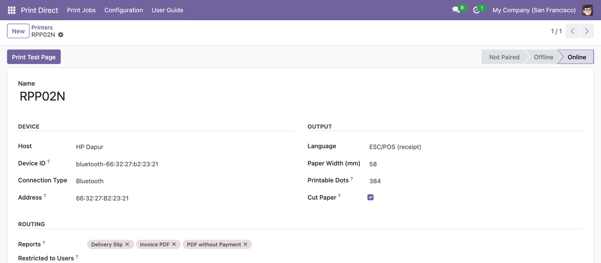
Print Direct untuk POS & laporan
Struk kasir, tiket dapur, dan laporan langsung ke printer.
1. Printer struk POS
- Buka Point of Sale › Configuration › Settings, bagian Connected Devices.
- Pilih Print Direct Receipt Printer.
- Aktifkan Automatic Receipt Printing (opsional) di bagian Bills & Receipts.
- Save, lalu refresh sesi POS agar printer baru dipakai.
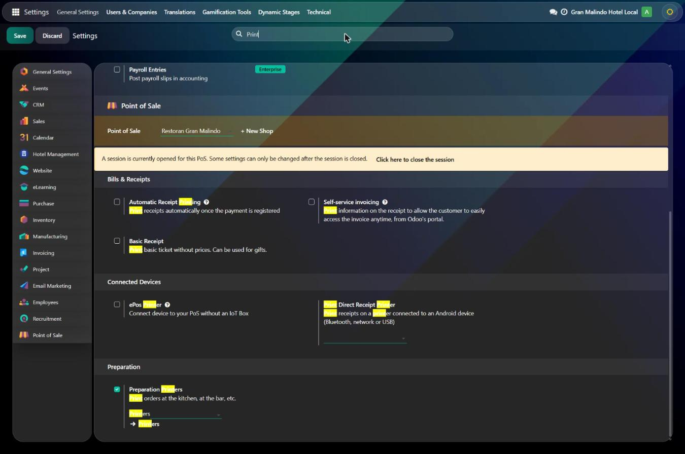
2. Printer dapur/bar
- Buka Point of Sale › Configuration › Preparation Printers, klik New.
- Printer Type: Use a Print Direct printer, lalu pilih printernya.
- Pilih Printed Product Categories (mis. Food untuk dapur, Beverage/Coffee untuk bar).
- Centang printer ini di POS Settings › Preparation Printers.
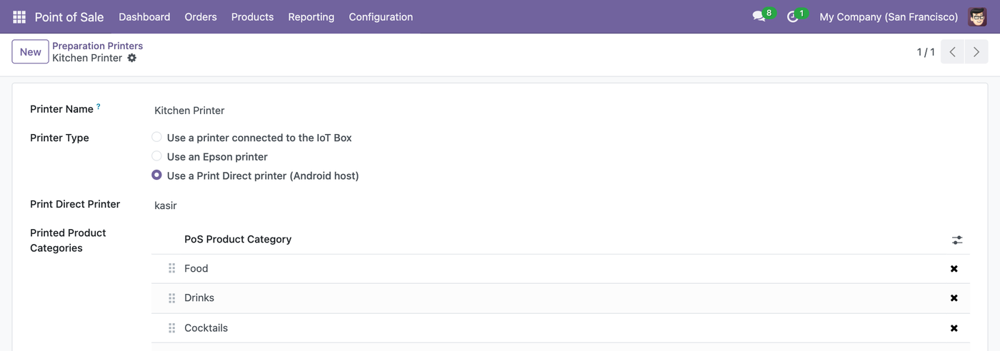
3. Laporan Odoo
Laporan yang sudah dirouting ke printer tidak diunduh lagi: setelah Print muncul notifikasi "PJ/… sent to Kasir" dan dokumen tercetak dalam beberapa detik. Routing juga bisa diatur dari laporan (mode developer): Settings › Technical › Reports › tab Print Direct.
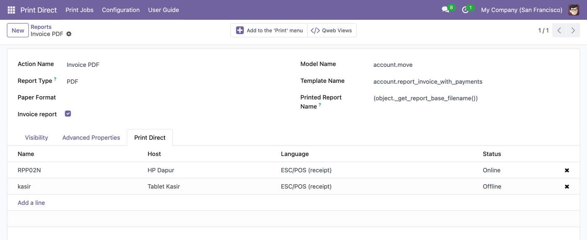
4. Print Jobs
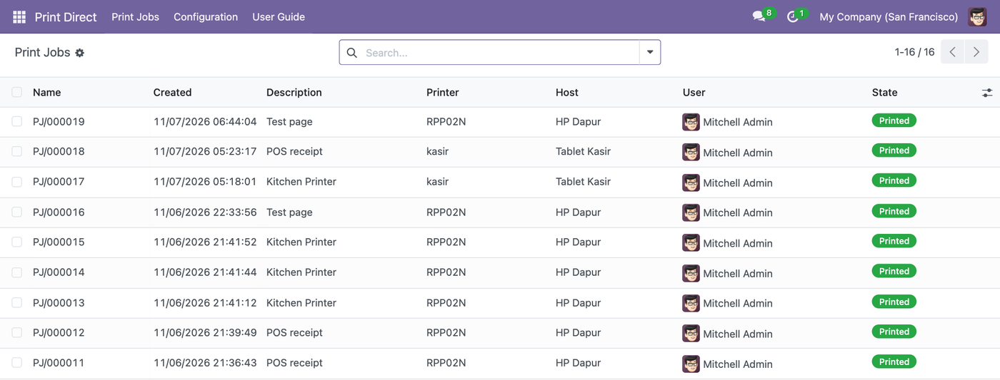
| Status | Arti |
|---|---|
| Queued | Menunggu diambil perangkat (perangkat offline → tercetak saat online lagi) |
| Sent to Device | Sedang dicetak |
| Printed | Berhasil |
| Failed | Gagal; buka tugas untuk melihat error lalu Retry |
| Cancelled | Dibatalkan sebelum tercetak |
Deposit, pembayaran & city ledger
Deposit & pembayaran
- Deposit di reservasi: klik Catat Deposit, pilih jurnal (Kas Front Office/Bank), jumlah, tanggal.
- Saat check-in, deposit otomatis menjadi pembayaran folio.
- Pembayaran tambahan: Catat Pembayaran di folio atau isi di wizard check-out.
- Saat invoice diposting, deposit dan pembayaran otomatis direkonsiliasi ke invoice.
City ledger (tagihan perusahaan)
- Isi Ditagih ke (City Ledger) di reservasi atau folio, dan pilih yang ditanggung: kamar & paket saja atau semua tagihan.
- Saat invoice dibuat, tagihan yang ditanggung jadi invoice ke perusahaan; sisanya ke tamu.
- Pantau piutang di Laporan › City Ledger (default yang belum lunas).
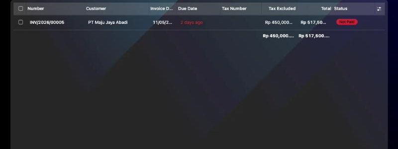
Komisi travel agent
Komisi dibuat otomatis saat tamu yang dibawa agen check-out. Buka Laporan › Komisi Travel Agent.
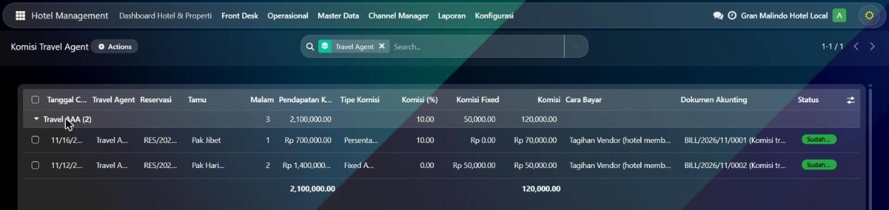
- Pilih komisi yang akan dibayar (filter Belum Dibayar, kelompok per agen).
- Klik Buat Tagihan Komisi. Sistem membuat vendor bill (atau credit note bila Potong Piutang) per agen.
- Posting dokumen di Accounting, lalu bayar seperti tagihan supplier biasa.
Jurnal akuntansi otomatis
Ke mana uang dan pendapatan tercatat.
Setiap transaksi hotel menghasilkan jurnal di Accounting › Accounting › Journal Entries. Kode akun di bawah sesuai chart of accounts database ini.
| Akun | Kode | Debit | Kredit |
|---|---|---|---|
| Kas Front Office / Bank | 101.1 / 102.1 | Rp xxx | — |
| Piutang Usaha | 103.1 | — | Rp xxx |
| Akun | Kode | Debit | Kredit |
|---|---|---|---|
| Piutang Usaha | 103.1 | Rp xxx | — |
| Pendapatan Kamar | 500.1 | — | Rp xxx |
| Pendapatan Makanan / Minuman | 500.2 / 500.3 | — | Rp xxx |
| Hutang Service Charge | 300.4 | — | Rp xxx |
| Hutang Pajak PBJT | 300.2 | — | Rp xxx |
| Akun | Kode | Debit | Kredit |
|---|---|---|---|
| Kas Restoran / Bank | 101.2 / 102.1 | Rp xxx | — |
| Pendapatan Makanan / Minuman | 500.2 / 500.3 | — | Rp xxx |
| Service & PBJT | 300.4 / 300.2 | — | Rp xxx |
| Akun | Kode | Debit | Kredit |
|---|---|---|---|
| Piutang POS | 103.2 | Rp xxx | — |
| Pendapatan F&B + pajak | 500.2 / 300.x | — | Rp xxx |
| Akun | Kode | Debit | Kredit |
|---|---|---|---|
| Biaya komisi (produk Komisi Travel Agent) | 6xx | Rp xxx | — |
| Hutang Dagang | 300.1 | — | Rp xxx |
| Akun | Kode | Debit | Kredit |
|---|---|---|---|
| Persediaan Makanan / Minuman | 104.1 / 104.2 | Rp xxx | — |
| Hutang Dagang | 300.1 | — | Rp xxx |
Daily transaction (kas & bank harian)
Untuk mencatat transaksi kas/bank harian di luar hotel (biaya listrik, belanja kecil, setoran) dengan cepat: satu header, banyak baris, satu jurnal per baris. Buka Accounting › Accounting › Daily Transactions.
- Klik New, isi Description, Date, Target COA (mis. 101.1 Kas Front Office), dan Journal.
- Isi Beginning Balance dan Ending Balance Actual.
- Tambah baris: tanggal, keterangan, jumlah (+ masuk / − keluar), dan Contra COA (akun lawan).
- Klik Validate. Satu jurnal dibuat per baris. Import Statement untuk impor mutasi bank.
Laporan
Laporan operasional hotel dan laporan keuangan.
1. Laporan Tamu Harian
Hotel Management › Laporan › Laporan Tamu Harian. Bisa dibuka oleh Front Desk dan Accountant.
2. Pendapatan per Item
Laporan › Pendapatan per Item: pivot pendapatan per tipe (Kamar, F&B, Room Service), produk, paket, dan bulan.
3. Laporan Tamu Asing (APOA)
Front Desk › Laporan Tamu Asing (APOA): daftar WNA menginap untuk pelaporan Imigrasi. Baris merah = data paspor belum lengkap. Pilih baris › Actions › Export.
4. Laporan PDF lain
| Laporan | Cara cetak |
|---|---|
| Registration Card | Reservasi › Print › Registration Card |
| Folio / Bill | Folio › Print › Folio / Bill |
| Kwitansi Pembayaran | Folio › Print › Kwitansi Pembayaran |
| Arrival List | Daftar Reservasi › pilih › Print › Arrival List |
5. Laporan keuangan
Accounting › Reporting: Profit and Loss, Balance Sheet, Cash Flow, General Ledger, Trial Balance, Aged Partner Balance, Bank/Cash Book. Pilih periode lalu Print.
CRM forecast otomatis
Setiap reservasi otomatis membuat opportunity di CRM, sehingga CRM › Reporting › Forecast terisi tanpa input ulang.
| Status reservasi | Tahap CRM | Probabilitas |
|---|---|---|
| Draft | New | 30% |
| Dikonfirmasi | Qualified | 70% |
| Dikonfirmasi + deposit dibayar | Proposition | 90% |
| Check-In / Check-Out | Won | 100% |
| Dibatalkan / No Show | Lost (alasan: Reservasi Dibatalkan / No Show) | 0% |
Channel manager (OTA)
Menghubungkan ketersediaan, harga, dan booking dengan OTA (Booking.com, Traveloka, Agoda, …) lewat Channex.
- Buka Channel Manager › Channel Connection, klik New.
- Isi Environment (Staging untuk uji, Production untuk live), API Key, dan Channex Property ID.
- Klik Test Connection. Status menjadi Connected.
- Daftarkan Webhook URL di Channex (polling tetap jalan sebagai cadangan).
- Petakan tipe kamar & rate plan di bagian Channel Manager pada form Tipe Kamar dan Rate Plan.
Pembelian & stok
- Buat RFQ: Purchase › Orders › Requests for Quotation › New, pilih supplier, produk, jumlah, harga.
- Confirm Order. PO di atas limit approval berstatus To Approve dan perlu Approve Order dari Purchase Administrator.
- Terima barang: Receive Products › isi jumlah › Validate. Stok bertambah.
- Tagihan supplier: Create Bill › cek › Confirm, lalu Pay.
- Stok opname berkala di Inventory › Operations › Physical Inventory.
FAQ & troubleshooting
Kamar tidak muncul saat check-in.
Hanya kamar Tersedia yang bisa di-check-in. Selesaikan tugas housekeeping/maintenance kamar itu atau cek statusnya di Master Data › Kamar.
Konfirmasi ditolak "Tipe kamar penuh".
Semua kamar tipe itu terpakai atau ditahan blok grup di salah satu malam. Cek Tape Chart, pilih tipe lain, atau rilis blok grup.
Harga malam tidak bisa diubah.
Malam yang sudah Diposting ke folio terkunci. Ubah lewat baris folio atau sebelum diposting.
Diskon tidak mengubah harga.
Permintaan diskon harus Disetujui supervisor. Malam yang sudah diposting tidak ikut berubah.
POS menolak "Tagihan ke Folio Kamar".
Pilih Customer = tamu hotel yang sudah check-in (punya folio terbuka).
Struk tidak tercetak (Print Direct).
Cek host Online, notifikasi "waiting for jobs" di HP, izin latar belakang/baterai, dan printer Bluetooth tidak dipakai perangkat lain. Lihat status di Print Jobs.
Pairing gagal "Failed to connect".
HP tidak bisa menjangkau alamat server di QR. Buka alamat itu di browser HP; perbaiki koneksi atau parameter web.base.url.
Komisi agen Rp 0.
Tipe Fixed Amount tapi nominal belum diisi di data agen/reservasi, atau reservasi batal/no-show.
Laporan Tamu Harian error wkhtmltopdf.
Admin server perlu memperbaiki instalasi wkhtmltopdf (mis. file kosong di C:\Windows\System32\wkhtmltopdf harus dihapus).
Akun pendapatan salah di invoice.
Cek kategori produk (Income Account) dan pastikan Income Account di produk kosong bila mengikuti kategori.